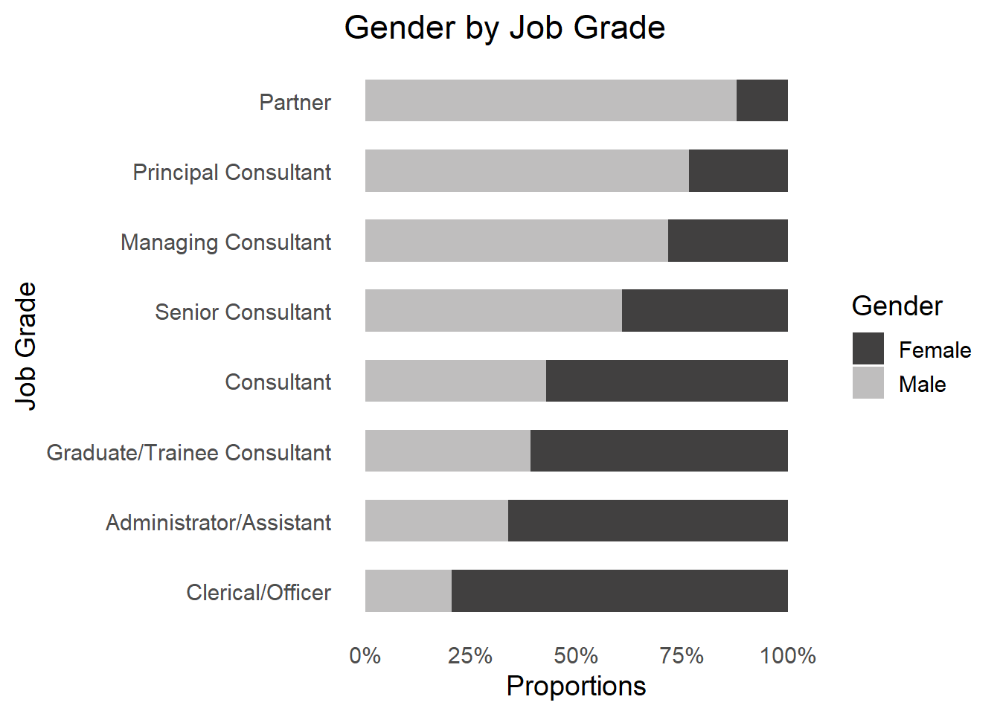

| female | male | |
|---|---|---|
| Sales Executives | 6 | 0 |
| Sales Representatives | 6 | 8 |
Introduction
A data analytics project typically involves working with quantifiable data to address business questions and objectives. However, for data to be valuable, it requires analysis and interpretation, which is where analytic techniques become critical. This post introduces two distinct tools for initiating data analysis with categorical data: cross-table and the chi-squared test.
Suppose we have 20 employees. Eight of them are males, and twelve are females. The 20 employees also have two job types. Six of them are sales executives, and fourteen are sales representatives. We have two variables: gender, with two categories (male and female), and job type, with two categories (sales executives and sales representatives) for the same 20 employees. For each combination of gender and job type, I counted the number of employees. The result I put in Table 1.
Such a table is called a cross-table. For every combination of two variables, we see the number of objects with that combination. Cross-tables are a nice way to visualize two categorical variables. Moreover, when analyzing categorical data, we may want to investigate if there is a relationship between variables. We can use the chi-squared test to determine whether two variables are associated or functionally related. The chi-squared test quantifies the degree of independence between two categorical variables. When employed together, the cross-table and chi-squared test can reveal intriguing patterns and relationships within the data.
The rest of this post will guide you through the utilization of cross-table and the chi-squared test for insightful data analysis.
Introducing two distinct tools for data analysis with categorical data using R
- Frequency tables
- Chi-squared test
Case study
- Focused on diversity and inclusion (D&I)
- Sourced from the book Predictive HR Analytics : Mastering the HR Metric
- With data available here
Problem Statement
A hypothetical company aims to employ data analytics to address a significant people problem: gender diversity.
From a commercial perspective, the organization seeks to foster a greater diversity of thought in senior and strategic discussions. On the other hand, from a people perspective, the organization wants to assess whether it maintains gender balance by providing positive role models for younger employees.
Analysis question
Are women underrepresented in senior leadership roles within the organization?
Data Preparation and exploration
Data set
For this case study I used a data set available here.
A hypothetical organization, a management consulting firm, has 1.493 employees.
The data set contains 11 variables.
Data type (in the data set): numeric for all variables.
diversity1 <- read_csv("./diversity1.csv")
skimr::skim(diversity1)| Name | diversity1 |
| Number of rows | 1493 |
| Number of columns | 11 |
| _______________________ | |
| Column type frequency: | |
| numeric | 11 |
| ________________________ | |
| Group variables | None |
Variable type: numeric
| skim_variable | n_missing | complete_rate | mean | sd | p0 | p25 | p50 | p75 | p100 | hist |
|---|---|---|---|---|---|---|---|---|---|---|
| BossGender | 0 | 1.00 | 1.69 | 0.46 | 1 | 1 | 2 | 2 | 2 | ▃▁▁▁▇ |
| Gender | 2 | 1.00 | 1.50 | 0.50 | 1 | 1 | 1 | 2 | 2 | ▇▁▁▁▇ |
| JobGrade | 0 | 1.00 | 4.02 | 1.73 | 1 | 2 | 4 | 5 | 8 | ▆▅▇▃▂ |
| Age | 0 | 1.00 | 38.27 | 9.57 | 16 | 31 | 38 | 46 | 66 | ▂▇▇▅▁ |
| Tenure | 0 | 1.00 | 10.00 | 9.88 | 0 | 2 | 7 | 14 | 42 | ▇▃▁▁▁ |
| Status | 0 | 1.00 | 1.24 | 0.76 | 1 | 1 | 1 | 1 | 5 | ▇▁▁▁▁ |
| PerformanceScore | 203 | 0.86 | 4.13 | 0.34 | 4 | 4 | 4 | 4 | 5 | ▇▁▁▁▁ |
| BossPerformance | 44 | 0.97 | 3.74 | 0.65 | 2 | 3 | 4 | 4 | 5 | ▁▅▁▇▂ |
| Division | 0 | 1.00 | 8.27 | 3.91 | 1 | 5 | 10 | 11 | 12 | ▂▁▁▁▇ |
| Country | 0 | 1.00 | 8.21 | 1.76 | 1 | 8 | 9 | 9 | 10 | ▁▁▁▂▇ |
| leaver | 2 | 1.00 | 1.07 | 0.26 | 1 | 1 | 1 | 1 | 2 | ▇▁▁▁▁ |
Variables of interest
To answer the question, the variables of interest are JobGrade and Gender.
The organization has eight distinct job grades, which are detailed below.
Of the 1.493 employees, 746 are female and 745 are male.
| Level | Job Grade |
|---|---|
| 1 | Clerical/Officer |
| 2 | Administrator/Assistant |
| 3 | Graduate/Trainee Consultant |
| 4 | Consultant |
| 5 | Senior Consultant |
| 6 | Managing Consultant |
| 7 | Principal Consultant |
| 8 | Partner |
| Level | Gender |
|---|---|
| 1 | Female |
| 2 | Male |
Data preparation
Change variables of interest as categorical
In the original data set, all variables are numeric. However, our variables of interest are not numeric; they are categorical. As a result, for the analysis, I will treat these variables as categorical. So, first, I will change the variables to categorical.
Code
# create new variables "gender" and "jobgrade"
diversity1 <- diversity1 |>
mutate(gender= factor(Gender,
levels= c(1:2),
labels= c("Female", "Male")),
jobgrade= factor(JobGrade,
levels= c(1:8),
labels= c("Clerical/Officer", "Administrator/Assistant", "Graduate/Trainee Consultant", "Consultant", "Senior Consultant", "Managing Consultant", "Principal Consultant", "Partner")))Create Cross-Table with the data for the two variables
Code
diversity1 |>
filter(gender != "NA") |>
tabyl(jobgrade, gender) |>
gt()|>
cols_label(jobgrade = "Job Grade") |>
tab_header(title = "Cross-table of gender and job grade ",
subtitle = "Count")| Cross-table of gender and job grade | ||
|---|---|---|
| Count | ||
| Job Grade | Female | Male |
| Clerical/Officer | 31 | 8 |
| Administrator/Assistant | 227 | 116 |
| Graduate/Trainee Consultant | 160 | 103 |
| Consultant | 139 | 104 |
| Senior Consultant | 98 | 152 |
| Managing Consultant | 68 | 171 |
| Principal Consultant | 19 | 62 |
| Partner | 4 | 29 |
We can see a pattern more clearly by expressing the data as percentages. I will convert the values to a percentage of the total numbers of each job grade.
Code
diversity1 |>
filter(gender != "NA") |>
tabyl(jobgrade, gender) |>
adorn_percentages() |>
mutate(across(where(is.numeric), ~ round(.x, 2)*100)) |>
gt()|>
cols_label(jobgrade = "Job Grade") |>
tab_header(title = "Cross-table of gender and job grade ",
subtitle = "Percent %")| Cross-table of gender and job grade | ||
|---|---|---|
| Percent % | ||
| Job Grade | Female | Male |
| Clerical/Officer | 79 | 21 |
| Administrator/Assistant | 66 | 34 |
| Graduate/Trainee Consultant | 61 | 39 |
| Consultant | 57 | 43 |
| Senior Consultant | 39 | 61 |
| Managing Consultant | 28 | 72 |
| Principal Consultant | 23 | 77 |
| Partner | 12 | 88 |
Are women underrepresented in senior leadership roles within the organization?
Up to this point, the data reveal a clear pattern: males are more common in senior roles, while females tend to occupy junior positions.
Code
# Custom label function
percent_label <- function(x) {
paste0(100*x, "%")
}
diversity1 |>
filter(gender != "NA") |>
ggplot(aes(x=jobgrade, fill= gender))+
geom_bar(position = "fill", width = 0.6)+
labs(title = "Gender by Job Grade",
x = "Job Grade",
y = "Proportions",
fill= "Gender")+
theme_minimal(base_size = 14)+
theme(plot.background = element_blank(),
panel.grid = element_blank())+
scale_fill_manual(values = c("Female" = "#414040", "Male"= "#BFBEBE"))+
scale_y_continuous(labels = percent_label, breaks = seq(0, 1, 0.25))+
coord_flip()
Does this organization have a gender diversity issue?
- The data indicate a pattern where women are more commonly in junior roles and men in senior roles.
- However, it’s unclear from the data whether this pattern is by chance or statistically significant.
- To assess this, we can employ a chi-squared test to determine the statistical significance of the observed pattern.
Chi-Squared Test
The hypotheses
H0: There is no association between gender and job grade within the organization.
- the observed distribution of females and males across job grades is due to random chance.
H1: There is a significant association between gender and job grade within the organization.
- the observed distribution of females and males across job grades is not a result of random chance; it reflects a significant pattern of male predominance in senior roles and a greater representation of females in entry-level positions.
Chi squared test in R
cross_tab <- table(diversity1$jobgrade, diversity1$gender)
chisq.test(cross_tab)
Pearson's Chi-squared test
data: cross_tab
X-squared = 164.7, df = 7, p-value < 2.2e-16- The p-value is extremely small, less than 2.2e-16, which is very close to zero.
- Since the p-value is less than the significance level of 0.05, we can confidently reject the null hypothesis, concluding that the two variables are dependent.
- This result indicates a statistically significant association between gender and job grade.
- It suggests that certain factors are influencing the observed distribution of genders within job grades.
Conclusion
Analyzing gender distribution across job grades
Cross-tables and graphical visualization offer a concise summary of gender distribution across job grades, revealing a clear pattern: men are more common in senior roles, while women predominantly hold junior positions.
The results of the chi-squared test, with a p-value close to zero, confirm a very strong association between gender and job grade.
Recommendation
- While this statistical evidence does not directly imply a gender diversity issue within the organization, it signals that factors beyond chance influence the gender distribution across job grades.
- To address potential gender bias or discrimination and foster diversity and inclusion within the organization, further analysis and actions are necessary.